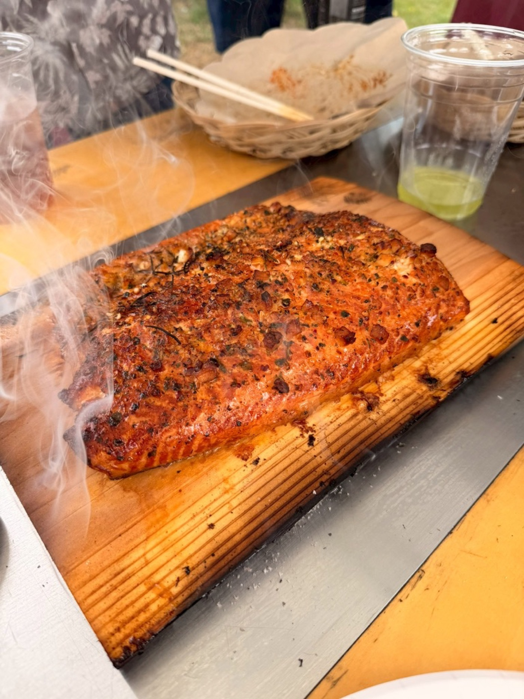
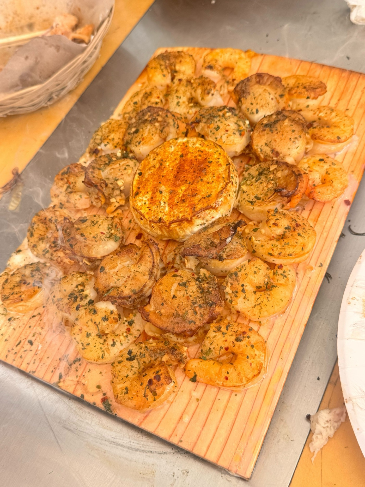
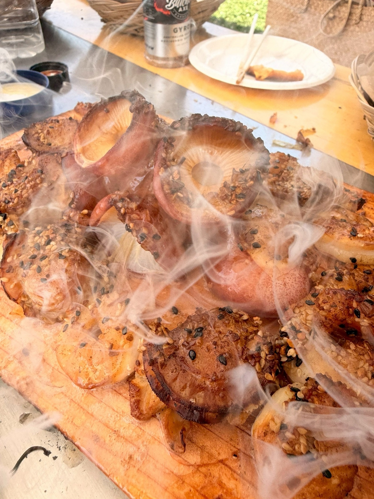

MONTHLY BBQ — INVITATION
YORONバーベキュー、はじめます。
朝から気持ちのいい時間に火を入れて、お昼を挟んでご一緒します。月に一度、誰でも来られるオープンなYORONバーベキューです。
SCHEDULE — 今後の開催予定
月1回、この日程で火を囲みます。
基本は月に一度の日曜開催。都合が合わない月があっても、翌月また会えます。
※9月は連休のためお休みです。日程は変更になる場合があります。どの回もクリックすると、その回の申込フォームに進めます。
RESERVE — 月1BBQの申込
次回は8月23日（日）・野川公園。
その先の回も、いま押さえられます。
10:00現地集合・13:00頃まで。会費は5,000円（施設利用料・食材・ソフトドリンク込み）。お酒はお好きなものをご持参ください。8月が合わない方は、10月・11月・12月の回を同じフォームからどうぞ。
8/23の会場・アクセス
- いちばんラク: 京王線「飛田給」駅、またはJR中央線「武蔵境」「東小金井」駅からタクシー約10分（1,500〜2,000円程度）。駅で待ち合わせて相乗りがおすすめです
- 電車のみなら西武多摩川線「新小金井」「多磨」駅から徒歩約15分
- お車は園内有料駐車場へ。集合場所の詳細（バーベキュー広場内の位置）は前日までにメールでご案内します
参加枠 — 第2回 8/23
0 / 10名（残り10枠）
各回とも定員10名・先着順です。満席後はキャンセル待ちでお受けします。お子様連れもウェルカムです。10月以降の場所は決まり次第、お申込者へメールでご案内します。
INVITATION — 招待状
これは、
"いつものBBQ"ではありません。
「バーベキュー」と聞くと、多くの方は——
薄切りの肉を網に乗せ、
いつのまにか焦げて、ナスがしおれて、
それでも楽しいねと笑い合う、
そんな光景を思い浮かべるかもしれません。
それはそれで、もちろん楽しい。ただ、料理そのものを味わう、味の細部にゆっくり降りていく、というような時間ではないように思います。
僕らがこの日に提供したい「バーベキュー」は、少しだけ別の体系に属しています。
蓋を閉めた炭のグリル。電気やガスも織り交ぜながら、焼く前に丁寧に下味をつけて、低温でゆっくり、じっくり、時間をかけて火を通していきます。
すると、肉も、魚も、野菜も、これまで自分が知っていたものとは、まるで別の食べ物のように、とてつもなく美味しくなる。
これを5年ほど続けてきたのが、あんちゃん（石原 杏莉）。山根は、あんちゃんは日本一美味しいバーベキューを提供してくれる人だと思っています。そのバーベキューに山根と植田が出会い、強烈に感動したことをきっかけに、この3人で「YORON BBQ」という取り組みを続けています。
少し、山根と植田の個人的な話を。ふたりはこの40年、食べることが大好きで、さまざまな美味しいご飯を堪能してきました。それでも、あんちゃんのバーベキューを口にしたときの感覚は、これまでの中でいちばん——というよりは、「美味しい」という言葉を超えた、幸せ、あるいはそれすら超えた何か、としか言いようのないものでした。気がつくと、いつもの自分とは少し違う世界に入っているような、そんな感覚すらありました。
日頃、仕事や趣味やさまざまな活動にアグレッシブに向き合っている皆様。だからこそ、僕らがそうして受け取った体験を、一度ご一緒に受け取っていただきたい。そう思って、この場を開くことにしました。
語りたいことはたくさんあるのですが、多くを語ってしまうと、皆さんがそこから何を感じ・何を持ち帰るかを僕らのほうで限定してしまいそうなので、この案内ではこのくらいの説明にとどめさせてください。
普通の食材が、異常に美味しくなる。
バーベキューならではのメニューをたくさん取り揃えてお待ちしています。ぜひ、お楽しみに。
GALLERY
火のまわりで起きていること。





日時・集合
日曜 10:00〜13:00頃
10:00 現地集合が基本です。少々朝早くて恐縮ですが、多くのバーベキュー場はAMの部とPMの部があり、気持ちのいいAMの部にしています。
会費
5,000円 / 1人
施設利用料＋食材＋ソフトドリンクを含みます。当日の参加人数はホストを合わせて10名程度を予定。お子様の参加もウェルカムです（お子様用に最適化されたメニューではない点だけご了承ください）。
持ちもの・服装
- お酒を飲まれる方は、お好きなお酒のみご持参ください。ソフトドリンク・機材・炭・食材はすべてこちらで用意します。
- 服装は煙の匂いがついても気にならないもの（グリルに過度に近寄らなければ大丈夫です）。
- 焼く工程も一緒に楽しみたい方は、その旨教えてください。エプロンがあると汚れを気にせず動けます。
- 雨天時は別途ご連絡します。
場所・アクセス — 都内の公園BBQ場で開催（回により変わります）
会場は毎回、武蔵野公園・野川公園・木場公園など都内の公園バーベキュー場から選んでいます。どの会場も最寄り駅からタクシー10分前後（1,500〜2,000円程度）——駅で待ち合わせて相乗りすれば、あっという間です。次回・第2回（8/23）は野川公園。詳しいアクセスは上の申込セクションを、集合場所の詳細はお申し込み後のメールでご案内します。
BEFORE THE DAY — 事前にお伺いしたいこと
ご返事のときに、3つだけ教えてください。
1. 苦手な食材・アレルギー
当日のメニューはお肉類・魚介類などの予定です。お苦手なもの・お避けになりたい食材があればお知らせください。可能な範囲で配慮いたします。
2. 一緒に焼いてみたいか
食べるだけでなく、焼く側としても参加してみたい方は教えてください。仕込みからの工程も、YORONバーベキューの醍醐味です。
3. 写真・SNSについて
当日は料理や場の様子を写真・動画で記録し、後日SNS等に掲載する可能性があります。「顔出しNG」「掲載自体NG」などのご希望があれば事前にお知らせください。
JOIN — 参加方法
申込は30秒。あとは当日、来るだけ。
紹介も資格もいりません。フォームで申し込めばその場で確定。今回が合わなければ、10月以降の回でも。
ちなみに次回の野川公園は、まっさらな広場を自由に使える無料の公園です。道具は全部ホスト側で運びます。何を運んでいるのかは会場レベル別・持ち物ガイドにまとめました。自分たちでもやってみたい人はどうぞ。
申込フォームを送る（30秒）
このページの申込フォームにお名前とメールを入れて送るだけ。すぐに確認メールが届きます。Instagram @afro_anri へのDMでも大丈夫です。
案内メールを待つ
開催が近づいたら、集合場所の詳細やメニューをメールでお送りします。アレルギー・苦手食材はフォームのひとことで教えてください。
当日、お酒だけ持って来る
ソフトドリンク・食材・機材はこちらで用意。火も、起こしておきます。